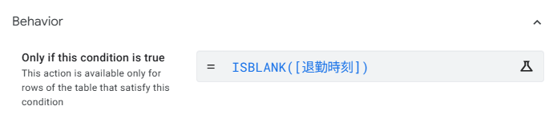
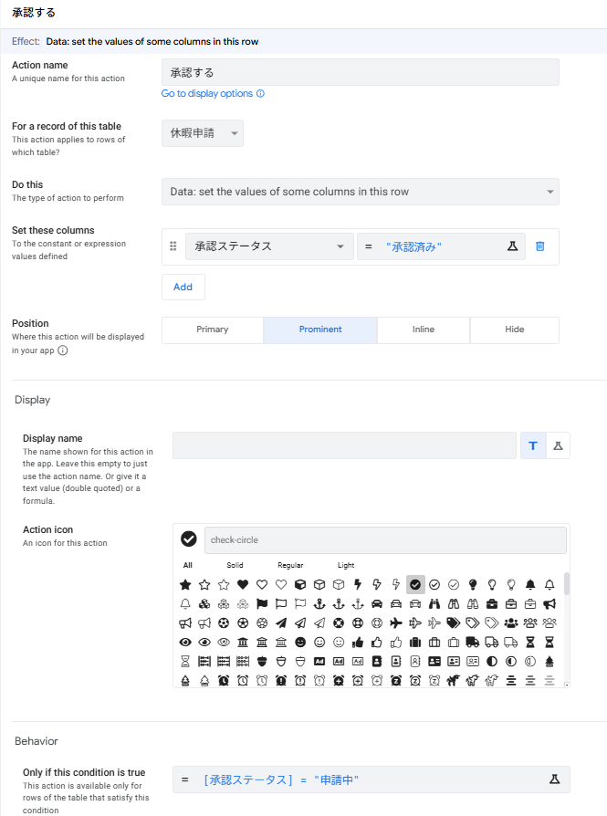
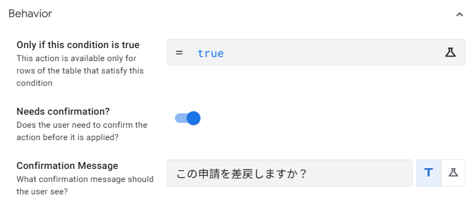
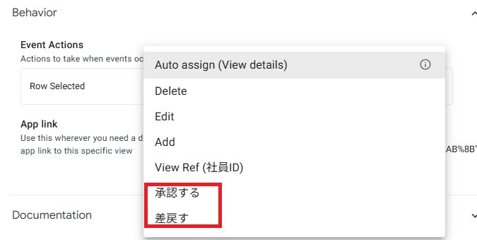
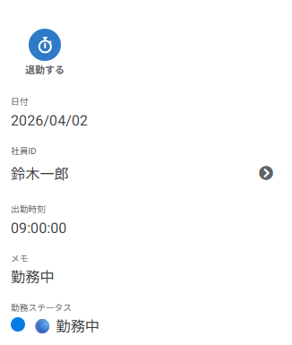
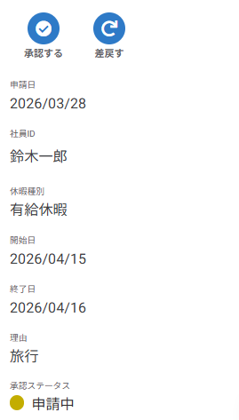

Action でボタン操作を作ろう
7-1 この章で作る3つの Action（中級編のポイント）
Action の基本（Actions パネルの開き方・Data: set the value of some columns in this row の設定・Display name / Icon / Position の指定など）は 初級編 第5章 で解説済みです。本章では基本操作の復習は省略し、中級編ならではの Action 活用 に絞って進めます。
- 条件付きで Action の表示/非表示を切り替える（
Only if this condition is true） - 確認ダイアログで誤操作を防ぐ（
Needs confirmation?） - 業務フローを複数の Action で設計する（打刻・承認・差戻しを組み合わせる）
- 一覧画面にも Action を配置して、ワンタップで連続処理できるようにする
■ この章で作る Action の全体像
| No. | Action 名 | 対象テーブル | 役割 |
|---|---|---|---|
| 1 | 🕐 退勤する | 勤怠記録 | 退勤時刻に現在時刻をセット（勤務中の行にのみ表示） |
| 2 | ✅ 承認する | 休暇申請 | 承認ステータスを「承認済み」に変更（申請中の行にのみ表示） |
| 3 | 🔄 差戻す | 休暇申請 | 承認ステータスを「差戻し」に変更（確認ダイアログあり） |
7-2 退勤打刻ボタン ─ 条件付きで表示を切り替える
勤怠記録に 「🕐 退勤する」 ボタンを追加します。中級編のポイントは 「退勤時刻が未入力の行にだけボタンを表示する」 という条件付き表示です。既に退勤した行では、誤操作で時刻を上書きしないようボタン自体を消します。
■ 設定内容
| 項目 | 設定値 |
|---|---|
| Action name | 退勤する |
| For a record of this table | 勤怠記録 |
| Do this | Data: set the values of some columns in this row |
| Set these columns | 退勤時刻 = TIMENOW() |
| Only if this condition is true | ISBLANK([退勤時刻]) |
| Action icon | 🕐（clock） |
| Position | Prominent |
■ 中級編のキモ：条件式 ISBLANK([退勤時刻])
初級編では全レコードで同じ Action が表示されましたが、中級編では Behavior → Only if this condition is true に式を入れて表示を動的に切り替えます。
ISBLANK([退勤時刻])この式は 退勤時刻が空欄なら TRUE を返します。TRUE の行だけボタンが表示され、退勤時刻が既に入っている行ではボタン自体が消えます。Format Rules（第6章）が「見た目」の条件付き制御だったのに対し、Action の条件式は「操作可否」の条件付き制御 です。
（退勤時刻 空欄）
→ ボタン表示
TIMENOW() をセット
→ ボタン非表示
■ 作成手順（要点のみ）
Behavior → Actions で 「+ New Action」 から新規作成。上の設定内容に従って Action name / For a record / Do this / Set these columns を入力します。
Behavior セクションを展開し、Only if this condition is true に次の式を入力します。
ISBLANK([退勤時刻])Appearance で Action icon を clock に、Position を Prominent に設定し、Save。

Only if this condition is true に ISBLANK([退勤時刻]) を設定TIMENOW() と NOW() の違いTIMENOW() は Time 型（時刻のみ）、NOW() は DateTime 型（日付+時刻）を返します。今回の退勤時刻カラムは Time 型のため TIMENOW() を使います。日付も含めたい場合は NOW()、日付だけなら TODAY()（初級編で学習）を使い分けます。
7-3 承認アクション ─ ステータスを1タップで変える
休暇申請に 「✅ 承認する」 ボタンを追加します。ここでも条件式を使って、承認ステータスが「申請中」の行にだけ ボタンを表示します。既に承認済み・差戻しの行にはボタンを出さないことで、ステータスを誤って上書きする事故を防ぎます。
■ 設定内容
| 項目 | 設定値 |
|---|---|
| Action name | 承認する |
| For a record of this table | 休暇申請 |
| Do this | Data: set the values of some columns in this row |
| Set these columns | 承認ステータス = "承認済み" |
| Only if this condition is true | [承認ステータス] = "申請中" |
| Action icon | ✅（check-circle） |
| Position | Prominent |
"承認済み"）。日本語のカギ括弧「」ではありません。第2章で設定した Enum の選択肢と 完全一致 していないと正しく動作しないので、スペースや全角・半角の混入に注意してください。

7-4 差戻しアクション ─ 確認ダイアログで誤操作を防ぐ
「承認する」と対になる 「🔄 差戻す」 アクションを作成します。差戻しは申請者にも影響が大きい操作のため、実行前に確認ダイアログを表示 する仕組み（Needs confirmation）を使います。
■ 設定内容
| 項目 | 設定値 |
|---|---|
| Action name | 差戻す |
| For a record of this table | 休暇申請 |
| Do this | Data: set the values of some columns in this row |
| Set these columns | 承認ステータス = "差戻し" |
| Only if this condition is true | [承認ステータス] = "申請中" |
| Needs confirmation? | ON（有効） |
| Confirmation Message | この申請を差戻しますか？ |
| Action icon | 🔄（redo / rotate-left） |
■ 中級編のキモ：Needs confirmation の使いどころ
Behavior → Needs confirmation? を ON にすると、ユーザーがボタンをタップしたあとに確認ダイアログが表示され、「確認」を押して初めて処理が実行されます。Confirmation Message 欄にはダイアログの本文が入ります。
| 使うべき場面 | 不要な場面 |
|---|---|
| 取り消しできない／影響が大きい操作 （差戻し・削除・提出・確定 など） |
すぐに修正できる操作 （打刻・検索・画面遷移 など） |
■ 作成手順（要点のみ）
「+ New Action」 から作成し、上の設定内容に従って入力します。Set these columns の値は "差戻し" です。
Behavior セクションの Needs confirmation? を ON にします。
直下の Confirmation Message 欄に「この申請を差戻しますか？」と入力します。
Appearance で icon を redo または rotate-left にして Save。

7-5 一覧画面への Action 配置と運用上の工夫
Action の Position を Prominent や Inline に設定すると、詳細画面（Detail View） にボタンが表示されます。しかし承認・差戻しのように 一覧を見ながら次々に処理する 業務では、一覧画面で行をタップしたときに即座に Action が実行される 設定にすると効率的です。ここではビュー側の Behavior → Event Actions を使って、一覧画面の行タップに Action を割り当てる方法を紹介します。
■ Event Actions で「行タップ = Action 実行」にする
ビューの Behavior セクションには Event Actions という設定があります。ここで「一覧画面で行がタップされたとき（Row Selected）」にどの Action を実行するかを指定できます。
左メニューの Views アイコン から、対象の一覧ビュー（例：休暇申請 や 勤怠記録）を開きます。
Behavior セクションを展開し、Event Actions の Row Selected のドロップダウンを開きます。
ドロップダウンに、自動生成された Action（Edit / Delete / Add など）と一緒に、自分で作成した 承認する・差戻す・退勤する が一覧表示されます。割り当てたい Action を選択します。
Save で保存します。以降、一覧画面で行をタップすると、選択した Action が実行されます。

- Row Selected は「Auto assign (View details)」のまま にして、行タップで詳細画面を開く
- 詳細画面に 承認する（Prominent）/ 差戻す（Prominent） を表示してワンタップ処理
- 第4章で作った 「申請中のみ」Slice ベースのビュー を使えば、承認待ちの申請だけが一覧に並ぶ → 詳細を開いて承認/差戻し → 一覧に戻る、の流れで連続処理できる
7-6 動作確認とまとめ
ここまでに作成した3つの Action が、条件式どおりに表示・非表示が切り替わるか確認しましょう。
■ 確認チェックリスト
- 勤怠記録：退勤時刻が空欄の行（例：A008）に「🕐 退勤する」ボタンが表示される
- 勤怠記録：退勤時刻が入力済みの行にはボタンが表示されない
- 「退勤する」ボタンを押すと、退勤時刻に現在時刻がセットされ、勤務ステータスが更新される
- 休暇申請：「申請中」の行に「✅ 承認する」「🔄 差戻す」ボタンが表示される
- 「承認する」を押すと、承認ステータスが「承認済み」に変わり、Format Rules の色（緑）に切り替わる
- 「差戻す」を押すと確認ダイアログが表示され、OK すると「差戻し」（赤）に切り替わる
- 承認済み・差戻しの行にはこれらのボタンが表示されない
- Views → Behavior → Event Actions の Row Selected に Action を割り当てられることを確認した（※ 運用上は Auto assign のままでもOK）
■ プレビューで確認


■ この章で作成した Action 一覧
| No. | Action 名 | 対象テーブル | セットする値 | 表示条件 | 確認DL |
|---|---|---|---|---|---|
| 1 | 退勤する | 勤怠記録 | [退勤時刻] = TIMENOW() | ISBLANK([退勤時刻]) | なし |
| 2 | 承認する | 休暇申請 | [承認ステータス] = "承認済み" | [承認ステータス] = "申請中" | なし |
| 3 | 差戻す | 休暇申請 | [承認ステータス] = "差戻し" | [承認ステータス] = "申請中" | あり |
■ 第7章のまとめ（中級編で新しく学んだこと）
| No. | 中級編で新しく扱ったポイント | 使った仕組み |
|---|---|---|
| 1 | 条件付きでボタンを表示/非表示 | Only if this condition is true + ISBLANK() |
| 2 | ステータス遷移を業務フローで設計 | 申請中 → 承認済み ／ 申請中 → 差戻し |
| 3 | 誤操作防止の確認ダイアログ | Needs confirmation? + Confirmation Message |
| 4 | ビューの Event Actions を理解 | Views → Behavior → Event Actions → Row Selected |
| 5 | Slice × Action で業務効率化 | 「申請中」Slice ベースのビューに承認/差戻しを配置 |